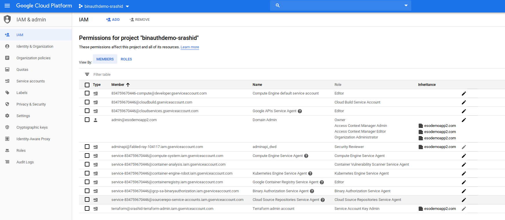
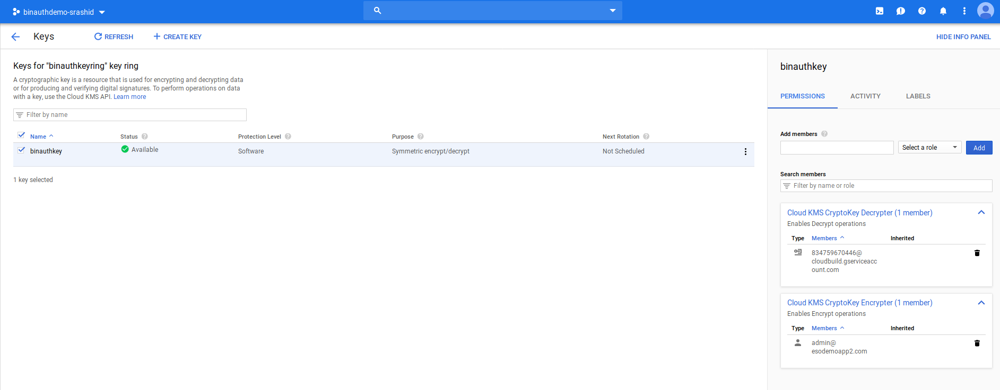
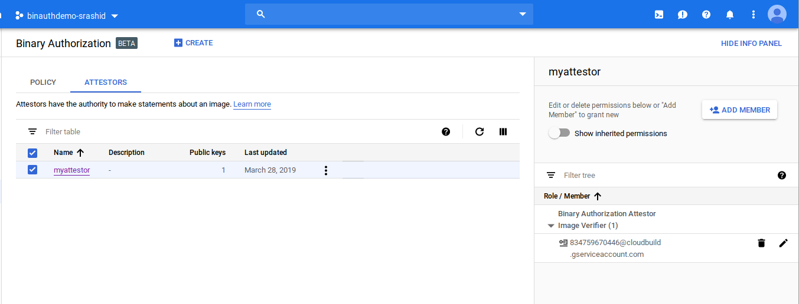
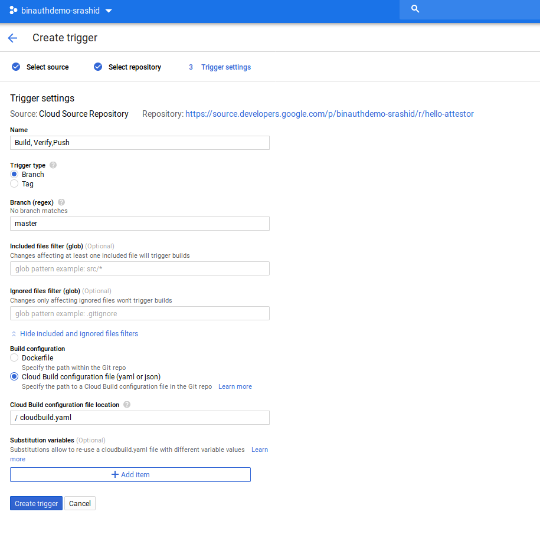
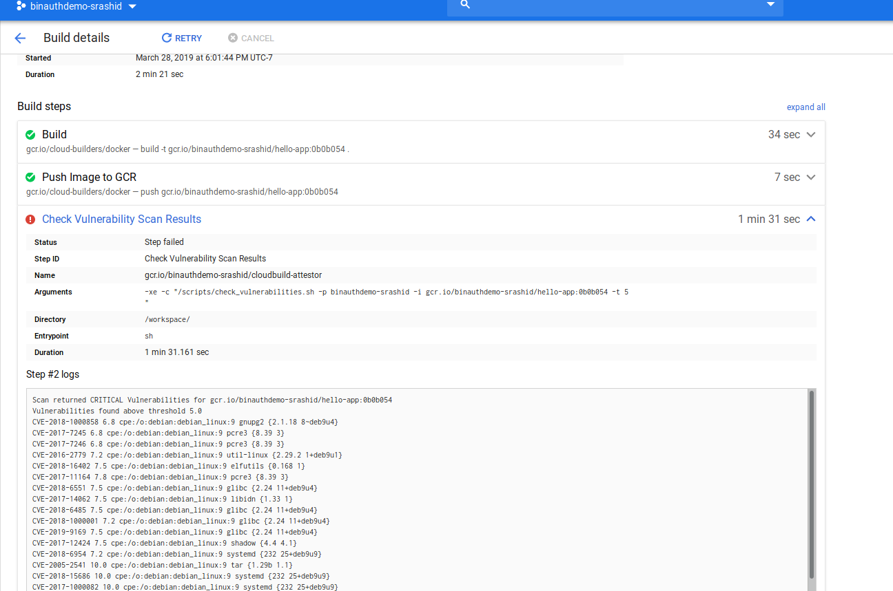
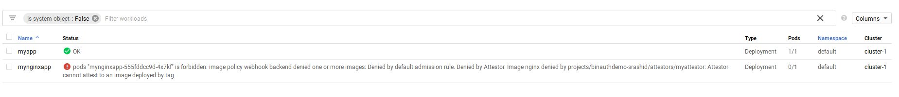

ARTICLES
GCP Binary Authorization and Vulnerability Scanning Demo
Sample application for GCP Binary Authorization + Vulernability Scanner.
- Creates GKE cluster with Binary Authorization
- Enables Binary Authoriztion policy on cluster
- Cloud Builder workflow checks checked in code to Cloud Source repository
- Builds container image and pushes to Cloud Container Registry
- Binary Auhorization step waits for Vulernability Scan to complete
- If Vulernability Scanner Fails, Deployment Fails
- If Succeeds, the imae is authorized for deployment to GKE
Note: this sample uses one cloud builder configuration to both build the image and do attestation. Normally, these functions are on separate but dependent workflows to prevent users that write and submit cloudbuild configrations from accessing attestors secrets (eg. use spinnaker). You can also setup external attestation which would address this issue.
Setup
Create Project
export PROJECT=binauthdemo-$USER
export ZONE=us-central1-a
gcloud config set compute/zone $ZONE
gcloud projects create $PROJECT --name $PROJECT
PROJECT_NUMBER="$(gcloud projects describe $PROJECT --format='get(projectNumber)')"
gcloud auth application-default login
(associate project to billing account)
Enable APIs
gcloud services enable binaryauthorization.googleapis.com cloudbuild.googleapis.com cloudkms.googleapis.com compute.googleapis.com container.googleapis.com containeranalysis.googleapis.com containerregistry.googleapis.com sourcerepo.googleapis.com
$ gcloud services list
NAME TITLE
bigquery-json.googleapis.com BigQuery API
binaryauthorization.googleapis.com Binary Authorization API
cloudapis.googleapis.com Google Cloud APIs
cloudbuild.googleapis.com Cloud Build API
clouddebugger.googleapis.com Stackdriver Debugger API
cloudkms.googleapis.com Cloud Key Management Service (KMS) API
cloudtrace.googleapis.com Stackdriver Trace API
compute.googleapis.com Compute Engine API
container.googleapis.com Kubernetes Engine API
containeranalysis.googleapis.com Container Analysis API
containerregistry.googleapis.com Container Registry API
datastore.googleapis.com Cloud Datastore API
iam.googleapis.com Identity and Access Management (IAM) API
iamcredentials.googleapis.com IAM Service Account Credentials API
logging.googleapis.com Stackdriver Logging API
monitoring.googleapis.com Stackdriver Monitoring API
oslogin.googleapis.com Cloud OS Login API
pubsub.googleapis.com Cloud Pub/Sub API
servicemanagement.googleapis.com Service Management API
serviceusage.googleapis.com Service Usage API
sourcerepo.googleapis.com Cloud Source Repositories API
sql-component.googleapis.com Cloud SQL
storage-api.googleapis.com Google Cloud Storage JSON API
storage-component.googleapis.com Cloud Storage
Export ServiceAccount names
export CLOUD_BUILD_SERVICE_ACCOUNT=$PROJECT_NUMBER@cloudbuild.gserviceaccount.com

Create GKE Cluster
export GKE_CLUSTER=cluster-1
gcloud beta container clusters create $GKE_CLUSTER --machine-type "n1-standard-1" --zone $ZONE --num-nodes 2 --enable-binauthz
- Allow CloudBuilder Access to Deploy to GKE
gcloud projects add-iam-policy-binding ${PROJECT} \
--member=serviceAccount:${CLOUD_BUILD_SERVICE_ACCOUNT} \
--role=roles/container.developer
Create GCS Bucket for Secrets
export GCS_BUCKET=binauthdemo-$USER
gsutil mb gs://$GCS_BUCKET
Create GPG keypair
export ATTESTOR_NAME=myattestor
Create keypair
$ gpg --full-generate-key- RSA and RSA; 4096bits; keys do not expire
- name: GCP_Attestor
- email: gcpattestor@domain.com
- password: password
Export Public/Private Keys
gpg --armor --export gcpattestor@domain.com > certs/$ATTESTOR_NAME.asc
gpg --export-secret-keys gcpattestor@domain.com > certs/$ATTESTOR_NAME.gpg
echo "password" > certs/$ATTESTOR_NAME.pass
- Export Fingerprint
For example
gpg --list-secret-keys
sec rsa4096 2019-03-28 [SC]
62851DE231E5D7519E58BAE3F6B283180B15EBB7
uid [ultimate] GCP_Attestor <gcpattestor@domain.com>
ssb rsa4096 2019-03-28 [E]
echo "62851DE231E5D7519E58BAE3F6B283180B15EBB7" > certs/$ATTESTOR_NAME.fpr
Copy Keys to GCS and change Permissions
gsutil iam ch serviceAccount:$CLOUD_BUILD_SERVICE_ACCOUNT:objectViewer gs://$GCS_BUCKET
Create KMS key and assign Permissions
export KMS_KEYRING=binauthkeyring
export KMS_KEY=binauthkey
gcloud kms keyrings create $KMS_KEYRING --location global
gcloud kms keys create $KMS_KEY --location=global --purpose=encryption --keyring=$KMS_KEYRING
- Allow Cloud Builder access to decrypt
gcloud kms keys add-iam-policy-binding $KMS_KEY --keyring $KMS_KEYRING --location global --member=serviceAccount:$CLOUD_BUILD_SERVICE_ACCOUNT --role='roles/cloudkms.cryptoKeyDecrypter'
- Allow current user to initially encrypt secrets
gcloud kms keys add-iam-policy-binding $KMS_KEY --keyring $KMS_KEYRING --location global --member=user:$(gcloud config get-value core/account) --role='roles/cloudkms.cryptoKeyEncrypter'

Encrypt Attestation Private Key and Passphrase
gcloud kms encrypt --plaintext-file=certs/$ATTESTOR_NAME.gpg --ciphertext-file=certs/$ATTESTOR_NAME.gpg.enc --key=$KMS_KEY --keyring=$KMS_KEYRING --location=global
gcloud kms encrypt --plaintext-file=certs/$ATTESTOR_NAME.pass --ciphertext-file=certs/$ATTESTOR_NAME.pass.enc --key=$KMS_KEY --keyring=$KMS_KEYRING --location=global
Upload Encrypted Key, Passphrase and Fingerprint
gsutil cp certs/$ATTESTOR_NAME.gpg.enc gs://$GCS_BUCKET/
gsutil cp certs/$ATTESTOR_NAME.pass.enc gs://$GCS_BUCKET/
gsutil cp certs/$ATTESTOR_NAME.fpr gs://$GCS_BUCKET/
gsutil cp certs/$ATTESTOR_NAME.asc gs://$GCS_BUCKET/
Configure Attestation
Create Note
export NOTE_ID=myattestor
cat > /tmp/note_payload.json << EOM
{
"name": "projects/${PROJECT}/notes/${NOTE_ID}",
"attestation_authority": {
"hint": {
"human_readable_name": "${PROJECT}-${NOTE_ID}"
}
}
}
EOM
curl -X POST \
-H "Content-Type: application/json" \
-H "Authorization: Bearer $(gcloud auth print-access-token)" \
--data-binary @/tmp/note_payload.json \
"https://containeranalysis.googleapis.com/v1beta1/projects/${PROJECT}/notes/?noteId=${NOTE_ID}"
Verify:
curl \
-H "Authorization: Bearer $(gcloud auth print-access-token)" \
"https://containeranalysis.googleapis.com/v1beta1/projects/${PROJECT}/notes/"
Set IAM Permissions
roles/containeranalysis.notes.occurrences.viewerroles/containeranalysis.notes.attacher
export NOTE_ID=myattestor
cat > /tmp/iam_request.json << EOM
{
'resource': 'projects/${PROJECT}/notes/${NOTE_ID}',
'policy': {
'bindings': [
{
'role': 'roles/containeranalysis.notes.occurrences.viewer',
'members': [
'serviceAccount:${CLOUD_BUILD_SERVICE_ACCOUNT}'
]
},
{
'role': 'roles/containeranalysis.notes.attacher',
'members': [
'serviceAccount:${CLOUD_BUILD_SERVICE_ACCOUNT}'
]
}
]
}
}
EOM
curl -X POST \
-H "Content-Type: application/json" \
-H "Authorization: Bearer $(gcloud auth print-access-token)" \
--data-binary @/tmp/iam_request.json \
"https://containeranalysis.googleapis.com/v1beta1/projects/${PROJECT}/notes/${NOTE_ID}:setIamPolicy"
Create Attestation
gcloud --project="${PROJECT}" \
beta container binauthz attestors create "${ATTESTOR_NAME}" \
--attestation-authority-note="${NOTE_ID}" \
--attestation-authority-note-project="${PROJECT}"
gcloud beta container binauthz attestors add-iam-policy-binding \
"projects/${PROJECT}/attestors/${ATTESTOR_NAME}" \
--member="serviceAccount:${CLOUD_BUILD_SERVICE_ACCOUNT}" \
--role=roles/binaryauthorization.attestorsVerifier
gcloud --project="${PROJECT}" \
beta container binauthz attestors public-keys add \
--attestor="${ATTESTOR_NAME}" \
--public-key-file=certs/${ATTESTOR_NAME}.asc

Deploy Vulnerability Scanner Image
docker build gcr.io/${PROJECT}/cloudbuild-attestor src/attestor/
gcloud docker -- push gcr.io/${PROJECT}/cloudbuild-attestor
Acquire the image Hash
gcloud docker -- inspect gcr.io/${PROJECT}/cloudbuild-attestor --format='{{.Id}}'
eg: sha256:b904e0c37b57e310a16a63662f2b9480aba35599883a498ca184aa6aa25b9ccd
Create Application
Create Source Repo
export REPO_NAME=hello-attestor
mkdir deployer/
gcloud source repos create $REPO_NAME
gcloud source repos clone $REPO_NAME .
git remote add google https://source.developers.google.com/p/$PROJECT/r/$REPO_NAME
Copy Application Source and Configure
cp -R ../src/app/* .
- Edit
cloudbuild.yaml
Change the NOTE_ID, ZONE, KMS_KEYRING, KMS_KEY and CLUTER_NAME: Change these values with the ones in current env:
echo $NOTE_ID
echo $ZONE
echo $KMS_KEYRING
echo $KMS_KEY
echo $CLUSTER_NAME
/scripts/create_attestation.sh -n NOTE_ID -p $PROJECT_ID -i $$FULLY_QUALIFIED_IMAGE -b BUCKET_NAME -r KMS_KEYRING -k KMS_KEY
...
env:
- 'CLOUDSDK_COMPUTE_ZONE=ZONE'
- 'CLOUDSDK_CONTAINER_CLUSTER=CLUSTER_NAME'
If using defaults:
/scripts/create_attestation.sh -n myattestor -p $PROJECT_ID -i $$FULLY_QUALIFIED_IMAGE -b binauthdemo-`whoami` -r binauthkeyring -k binauthkey
...
env:
- 'CLOUDSDK_COMPUTE_ZONE=us-central1-a'
- 'CLOUDSDK_CONTAINER_CLUSTER=cluster-1'
Create Build Trigger
Cloud Console >> Container Builder
- Create Trigger:
- ‘Cloud Source Repository’
- select set value for $REPO_NAME
- Name: “Build, Verify,Push”
- Trigger Type: Branch (regex: master)
- Cloud Build Configuration File
cloudbuild.yaml

- Create Trigger:
Push Application
The following will build an push an application with the imageName: gcr.io/${PROJECT}/hello-app
git add -A && git commit -m "commit (`date`)" && git push google master
- View Build Progress

Verify Service
$ kubectl get po,svc,deployment
NAME READY STATUS RESTARTS AGE
pod/myapp-6fb976d8cc-zrctx 1/1 Running 0 3m
NAME TYPE CLUSTER-IP EXTERNAL-IP PORT(S) AGE
service/hello-app-service LoadBalancer 10.11.249.32 35.222.0.110 80:30909/TCP 10m
service/kubernetes ClusterIP 10.11.240.1 <none> 443/TCP 4h
NAME DESIRED CURRENT UP-TO-DATE AVAILABLE AGE
deployment.extensions/myapp 1 1 1 1 3m
$ curl http://35.222.0.110/
Hello World!
Verify Deployment Failure for vuleranable images
Change the base image from gcr.io/distroless/static to debain. This will cause the pipeline to fail since the number of CVE findings will exceed
the allocated threshold in check_vulnerabilities.sh -p $PROJECT_ID -i gcr.io/$PROJECT_ID/hello-app:$SHORT_SHA -t 5
(default level: 5)
edit `deployment/Docker
#FROM gcr.io/distroless/static FROM debian
Push
git add -A && git commit -m "commit (`date`)" && git push google master
Check Failure:
Scan returned CRITICAL Vulnerabilities for gcr.io/binauthdemo-srashid/hello-app:0b0b054
Vulnerabilities found above threshold 5.0
CVE-2018-1000858 6.8 cpe:/o:debian:debian_linux:9 gnupg2 {2.1.18 8~deb9u4}
CVE-2017-7245 6.8 cpe:/o:debian:debian_linux:9 pcre3 {8.39 3}
CVE-2017-7246 6.8 cpe:/o:debian:debian_linux:9 pcre3 {8.39 3}
CVE-2016-2779 7.2 cpe:/o:debian:debian_linux:9 util-linux {2.29.2 1+deb9u1}
CVE-2018-16402 7.5 cpe:/o:debian:debian_linux:9 elfutils {0.168 1}
CVE-2017-11164 7.8 cpe:/o:debian:debian_linux:9 pcre3 {8.39 3}

Enable Binary Authorization
Enable Binary Authorization on this cluster by setting a Policy
gcloud beta container binauthz policy export > /tmp/policy.yaml
- edit
/tmp/policy
and replace with the default config to enforce as shown in the link above
eg:
echo $PROJECT
echo $ATTESTOR_NAME
...
defaultAdmissionRule:
evaluationMode: REQUIRE_ATTESTATION
enforcementMode: ENFORCED_BLOCK_AND_AUDIT_LOG
requireAttestationsBy:
- projects/PROJECT/attestors/ATTESTOR_NAME
...
$ gcloud beta container binauthz policy import /tmp/policy.yaml
Attempt to deploy arbitrary container
$ kubectl run --image=nginx mynginxapp
deployment.apps/mynginxapp created
Deployment is created but the Workload shows:
pods "mynginxapp-555fddcc9d-4x7kf" is forbidden: image policy webhook backend denied one or more images: Denied by default admission rule. Denied by Attestor. Image nginx denied by projects/binauthdemo-srashid/attestors/myattestor: Attestor cannot attest to an image deployed by tag

Deploy Attested Container
edit
deploy/src/main.goand upateHello World–>Hello World!!!!Redploy
git add -A && git commit -m "commit (`date`)" && git push google master
$ git add -A && git commit -m "commit (`date`)" && git push google master
[master de438e4] commit (Thu Mar 28 17:40:30 PDT 2019)
To https://source.developers.google.com/p/binauthdemo-srashid/r/hello-attestor
82e5817..de438e4 master -> master
Output
DONE PUSH Finished Step #5 - "Deploy to GKE" Step #5 - "Deploy to GKE": service/hello-app-service unchanged Step #5 - "Deploy to GKE": deployment.apps/myapp configured Step #5 - "Deploy to GKE": Running: kubectl apply -f kubernetes.yaml Step #5 - "Deploy to GKE": kubeconfig entry generated for cluster-1. Step #5 - "Deploy to GKE": Fetching cluster endpoint and auth data. Step #5 - "Deploy to GKE": Running: gcloud container clusters get-credentials --project="binauthdemo-srashid" --zone="us-central1-a" "cluster-1" Step #5 - "Deploy to GKE": Already have image (with digest): gcr.io/cloud-builders/kubectl Starting Step #5 - "Deploy to GKE" Finished Step #4 - "Generate k8s manifest" Step #4 - "Generate k8s manifest": Already have image (with digest): gcr.io/cloud-builders/gcloud Starting Step #4 - "Generate k8s manifest" Finished Step #3 - "Attest" Step #3 - "Attest": + gcloud beta container binauthz attestations create --artifact-url=gcr.io/binauthdemo-srashid/hello-app@sha256:da9eda4adcd09b5ef9ae99369c13b06ba77247f8f4ab5bf4b47889a58c5e87d8 --attestor=projects/binauthdemo-srashid/attestors/myattestor --signature-file=generated_signature.pgp --pgp-key-fingerprint=62851DE231E5D7519E58BAE3F6B283180B15EBB7 Step #3 - "Attest": ++ cat myattestor.fpr Step #3 - "Attest": + gpg2 --no-tty --pinentry-mode loopback --passphrase-file myattestor.pass --output generated_signature.pgp --armor --sign generated_payload.json Step #3 - "Attest": gpg: secret keys imported: 2 Step #3 - "Attest": gpg: secret keys read: 3Verify Attestion for Image:
gcr.io/binauthdemo-srashid/hello-app@sha256:da9eda4adcd09b5ef9ae99369c13b06ba77247f8f4ab5bf4b47889a58c5e87d8gcloud beta container binauthz attestations list --artifact-url=gcr.io/binauthdemo-srashid/hello-app@sha256:da9eda4adcd09b5ef9ae99369c13b06ba77247f8f4ab5bf4b47889a58c5e87d8 --attestor=projects/binauthdemo-srashid/attestors/myattestor PGP_KEY_ID ARTIFACT_URL 62851DE231E5D7519E58BAE3F6B283180B15EBB7 https://gcr.io/binauthdemo-srashid/hello-app@sha256:da9eda4adcd09b5ef9ae99369c13b06ba77247f8f4ab5bf4b47889a58c5e87d8
Verify Attested Container
$ kubectl get po,svc,deployment
NAME READY STATUS RESTARTS AGE
pod/myapp-56f85dc886-fg6sw 1/1 Running 0 2m <<<<<<<<<<<<<<<
NAME TYPE CLUSTER-IP EXTERNAL-IP PORT(S) AGE
service/hello-app-service LoadBalancer 10.11.249.32 35.222.0.110 80:30909/TCP 43m
service/kubernetes ClusterIP 10.11.240.1 <none> 443/TCP 4h
NAME DESIRED CURRENT UP-TO-DATE AVAILABLE AGE
deployment.extensions/myapp 1 1 1 1 36m
deployment.extensions/mynginxapp 1 0 0 0 15m
$curl http://35.222.0.110/
Hello World!!!!
Cleanup
Delete project
gcloud projects delete $PROJECT
References
- https://cloud.google.com/binary-authorization/docs/quickstart
- https://cloud.google.com/cloud-build/docs/configuring-builds/substitute-variable-values
- https://cloud.google.com/solutions/secure-software-supply-chains-on-google-kubernetes-engine
- https://www.youtube.com/watch?v=O2YRS9i8O60&feature=youtu.be&t=902
- https://cloud.google.com/binary-authorization/docs/creating-attestors